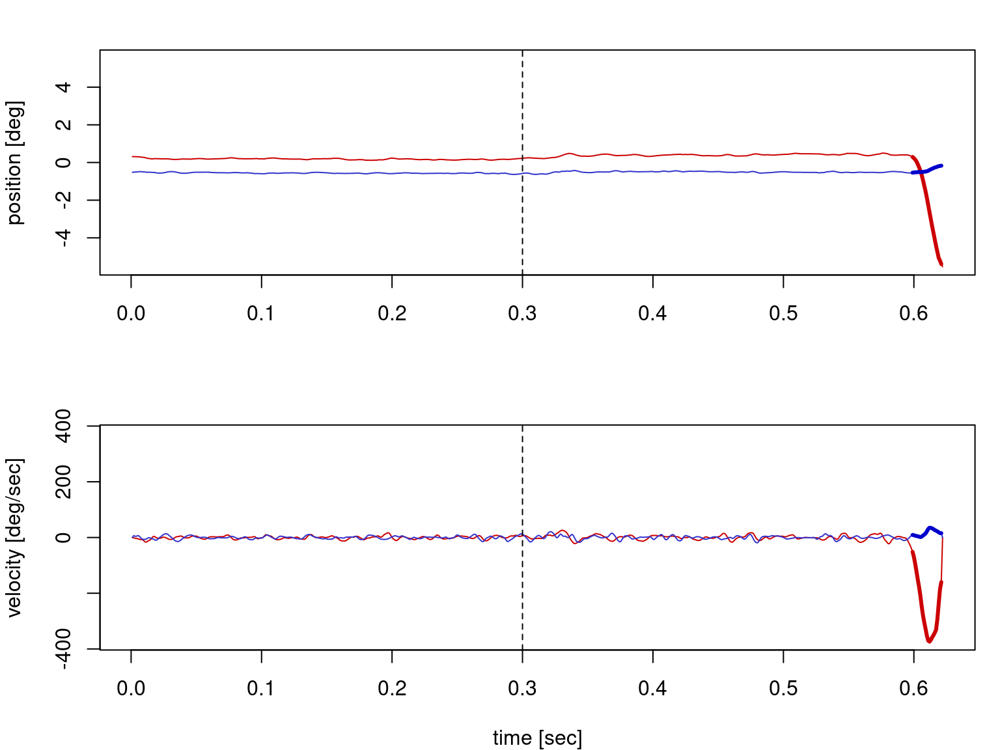
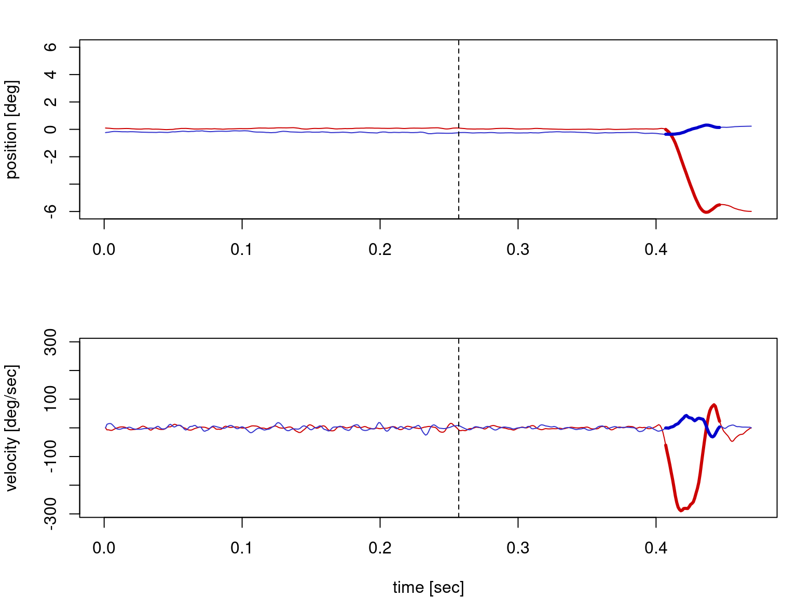

Code
rm(list = ls())
library(eyelinker)
source("eyelink_source.R")PS5210 25-26
This worksheet illustrates analysis of the eyetracking data in the anti-saccade task.
rm(list = ls())
library(eyelinker)
source("eyelink_source.R")scr <- list(
subDist = 80, # subject distance (cm)
width = 570, # monitor width (mm)
xres = 1920,
yres = 1080
)
scr$xCenter <- scr$xres / 2
scr$yCenter <- scr$yres / 2
ppd <- va2pix(1, scr)
ppd[1] 47.03681edf <- "./data/S2301.edf"
# Simple conversion step
system2("edf2asc", args = c("-y", edf))
asc <- sub("\\.[Ee][Dd][Ff]$", ".asc", edf)
dat <- read.asc(asc, parse_all = TRUE)
str(dat)List of 8
$ raw : spc_tbl_ [32,068 × 6] (S3: spec_tbl_df/tbl_df/tbl/data.frame)
..$ block : num [1:32068] 1 1 1 1 1 1 1 1 1 1 ...
..$ time : int [1:32068] 862762 862763 862764 862765 862766 862767 862768 862769 862770 862771 ...
..$ xp : num [1:32068] 953 953 953 953 953 ...
..$ yp : num [1:32068] 437 436 436 437 437 ...
..$ ps : num [1:32068] 911 911 925 925 912 903 903 905 905 905 ...
..$ cr.info: chr [1:32068] "..." "..." "..." "..." ...
..- attr(*, "spec")=
.. .. cols(
.. .. time = col_integer(),
.. .. xp = col_double(),
.. .. yp = col_double(),
.. .. ps = col_double(),
.. .. cr.info = col_character()
.. .. )
..- attr(*, "problems")=<externalptr>
$ sacc : tibble [89 × 11] (S3: tbl_df/tbl/data.frame)
..$ block: num [1:89] 1 1 1 1 1 2 2 2 2 3 ...
..$ stime: num [1:89] 862818 862981 863139 863354 863972 ...
..$ etime: num [1:89] 862842 863057 863214 863372 863997 ...
..$ dur : num [1:89] 25 77 76 19 26 57 20 8 64 53 ...
..$ sxp : num [1:89] 949 993 322 988 979 ...
..$ syp : num [1:89] 440 530 559 553 566 ...
..$ exp : num [1:89] 1005 319 1008 964 713 ...
..$ eyp : num [1:89] 517 553 548 564 549 ...
..$ ampl : num [1:89] 2.46 16.73 17 0.69 6.82 ...
..$ pv : num [1:89] 167 480 619 76 424 489 91 59 422 359 ...
..$ eye : Factor w/ 2 levels "L","R": 2 2 2 2 2 2 2 2 2 2 ...
$ fix : tibble [92 × 8] (S3: tbl_df/tbl/data.frame)
..$ block: num [1:92] 1 1 1 1 1 2 2 2 2 3 ...
..$ stime: num [1:92] 862768 862843 863058 863215 863373 ...
..$ etime: num [1:92] 862817 862980 863138 863353 863971 ...
..$ dur : num [1:92] 50 138 81 139 599 40 254 359 214 114 ...
..$ axp : num [1:92] 951 994 322 992 974 ...
..$ ayp : num [1:92] 437 525 556 551 565 ...
..$ aps : num [1:92] 907 926 925 956 973 ...
..$ eye : Factor w/ 2 levels "L","R": 2 2 2 2 2 2 2 2 2 2 ...
$ blinks: tibble [0 × 5] (S3: tbl_df/tbl/data.frame)
..$ block: int(0)
..$ stime: num(0)
..$ etime: num(0)
..$ dur : num(0)
..$ eye : Factor w/ 2 levels "L","R":
$ msg : tibble [582 × 3] (S3: tbl_df/tbl/data.frame)
..$ block: num [1:582] 0.5 0.5 0.5 0.5 0.5 0.5 0.5 0.5 0.5 0.5 ...
..$ time : num [1:582] 832525 832525 832525 846097 846097 ...
..$ text : chr [1:582] "BEGIN OF DESCRIPTIONS" "Subject code: S2301" "END OF DESCRIPTIONS" "!CAL " ...
$ input : tibble [63 × 3] (S3: tbl_df/tbl/data.frame)
..$ block: num [1:63] 0.5 0.5 0.5 1 1.5 2 2.5 3 3.5 4 ...
..$ time : num [1:63] 835652 849634 862659 862762 864001 ...
..$ value: int [1:63] 127 127 127 127 127 127 127 127 127 127 ...
$ button: tibble [0 × 4] (S3: tbl_df/tbl/data.frame)
..$ block : int(0)
..$ time : num(0)
..$ button: int(0)
..$ state : int(0)
$ info :'data.frame': 1 obs. of 20 variables:
..$ date : POSIXct[1:1], format: "2009-01-01 00:37:30"
..$ model : chr "EyeLink 1000"
..$ version : chr "4.594"
..$ sample.rate : num 1000
..$ cr : logi TRUE
..$ left : logi FALSE
..$ right : logi TRUE
..$ mono : logi TRUE
..$ screen.x : num 1920
..$ screen.y : num 1080
..$ mount : chr "Desktop / Monocular / Head Stabilized"
..$ filter.level: num 1
..$ sample.dtype: chr "GAZE"
..$ event.dtype : chr "GAZE"
..$ pupil.dtype : chr "AREA"
..$ velocity : logi FALSE
..$ resolution : logi FALSE
..$ htarg : logi FALSE
..$ input : logi FALSE
..$ buttons : logi FALSEInspect key messages:
head(dat$msg$text, 20) [1] "BEGIN OF DESCRIPTIONS"
[2] "Subject code: S2301"
[3] "END OF DESCRIPTIONS"
[4] "!CAL "
[5] "!CAL Calibration points: "
[6] "!CAL -9.0, -37.1 0, 96 "
[7] "!CAL -8.7, -52.1 0, -2852 "
[8] "!CAL -9.6, -21.8 0, 2982 "
[9] "!CAL -42.5, -36.0 -5183, 96 "
[10] "!CAL 25.7, -35.9 5183, 96 "
[11] "!CAL -30.1, -45.5 -3130, -1665 "
[12] "!CAL 12.8, -45.2 3130, -1665 "
[13] "!CAL -29.8, -29.0 -3090, 1835 "
[14] "!CAL 10.7, -27.3 3090, 1835 "
[15] "!CAL eye check box: (L,R,T,B)"
[16] "!CAL href cal range: (L,R,T,B)"
[17] "!CAL Cal coeff:(X=a+bx+cy+dxx+eyy,Y=f+gx+goaly+ixx+jyy)"
[18] "!CAL Prenormalize: offx, offy = -8.9947 -37.096"
[19] "!CAL Quadrant center: centx, centy = "
[20] "!CAL Corner correction:" table(grepl("^EVENT_FixationDot$", dat$msg$text))
FALSE TRUE
552 30 table(grepl("^EVENT_TargetOnset$", dat$msg$text))
FALSE TRUE
552 30 table(grepl("^TRIAL_START", dat$msg$text))
FALSE TRUE
552 30 table(grepl("^TRIAL_END", dat$msg$text))
FALSE TRUE
552 30 head(dat$msg$text[grepl("^TrialData", dat$msg$text)], 6)[1] "TrialData 1\t0.29\t2.00\t1.00\t1.00\t\t162049.17\t162049.46\t162049.78\t0.31\t"
[2] "TrialData 1\t0.29\t2.00\t1.00\t1.00\t\t162049.17\t162049.46\t162049.78\t0.31\t"
[3] "TrialData 2\t0.26\t1.00\t0.00\t0.00\t\t162050.78\t162051.04\t162051.29\t0.25\t"
[4] "TrialData 2\t0.26\t1.00\t0.00\t0.00\t\t162050.78\t162051.04\t162051.29\t0.25\t"
[5] "TrialData 3\t0.37\t2.00\t0.00\t1.00\t\t162052.32\t162052.69\t162053.04\t0.35\t"
[6] "TrialData 3\t0.37\t2.00\t0.00\t1.00\t\t162052.32\t162052.69\t162053.04\t0.35\t"For each trial we extract:
TRIAL_START, EVENT_FixationDot, EVENT_TargetOnset, TRIAL_END)TrialData (Soa, target_side, anti_saccade, correct)t_start and t_end - 10time = 0 at target onset)msg <- dat$msg[order(dat$msg$time), , drop = FALSE]
raw <- dat$raw[order(dat$raw$time), , drop = FALSE]
# Build a trialdata lookup table keyed by trial number.
# TrialData format used in this task:
# TrialData <trial_n> <Soa> <target_side> <anti_saccade> <correct> ...
trialdata_map <- list()
for (i in seq_len(nrow(msg))) {
text_i <- msg$text[i]
if (is.na(text_i) || !grepl("^TrialData", text_i)) next
tok <- strsplit(trimws(text_i), "\\s+")[[1]]
if (length(tok) < 6) next
tr_n <- suppressWarnings(as.integer(tok[2]))
if (is.na(tr_n)) next
# Keep the first occurrence (some files duplicate TrialData messages)
key <- as.character(tr_n)
if (is.null(trialdata_map[[key]])) {
trialdata_map[[key]] <- list(
trial_n = tr_n,
Soa = suppressWarnings(as.numeric(tok[3])),
target_side = suppressWarnings(as.integer(as.numeric(tok[4]))),
anti_saccade = suppressWarnings(as.integer(as.numeric(tok[5]))),
correct = suppressWarnings(as.integer(as.numeric(tok[6])))
)
}
}
trials <- list()
trial_count <- 0L
trial_n <- NA_integer_
trial_n_2 <- NA_integer_
t_start <- NA_integer_
t_end <- NA_integer_
fixation_onset <- NA_integer_
target_onset <- NA_integer_
for (i in seq_len(nrow(msg))) {
text_i <- msg$text[i]
if (is.na(text_i) || text_i == "") next
sa <- strsplit(trimws(text_i), "\\s+")[[1]]
if (length(sa) == 0) next
if (sa[1] == "TRIAL_START" && length(sa) >= 2) {
trial_n <- suppressWarnings(as.integer(sa[2]))
t_start <- as.integer(msg$time[i])
}
if (sa[1] == "EVENT_FixationDot") {
fixation_onset <- as.integer(msg$time[i])
}
if (sa[1] == "EVENT_TargetOnset") {
target_onset <- as.integer(msg$time[i])
}
if (sa[1] == "TRIAL_END" && length(sa) >= 2) {
trial_n_2 <- suppressWarnings(as.integer(sa[2]))
t_end <- as.integer(msg$time[i])
}
ready <- !is.na(trial_n) && !is.na(trial_n_2) && !is.na(t_start) && !is.na(target_onset) && !is.na(t_end)
if (ready) {
trial_count <- trial_count + 1L
# use t_end - 10 if there are missing ms at trial end.
idx_start <- match(t_start, raw$time)
if (is.na(idx_start)) idx_start <- which.min(abs(raw$time - t_start))
idx_end_target <- t_end -1 # - 10L
idx_end <- match(idx_end_target, raw$time)
if (is.na(idx_end)) idx_end <- which.min(abs(raw$time - idx_end_target))
if (idx_end < idx_start) {
tmp <- idx_start
idx_start <- idx_end
idx_end <- tmp
}
idx <- seq.int(idx_start, idx_end)
timestamp <- as.integer(raw$time[idx] - target_onset)
eye_x <- as.numeric(raw$xp[idx])
eye_y <- as.numeric(raw$yp[idx])
# Missing values and off-screen values -> NA
miss <- (eye_x == 100000000) | (eye_y == 100000000)
eye_x[miss] <- NA_real_
eye_y[miss] <- NA_real_
bad <- eye_x < 0 | eye_x > scr$xres | eye_y < 0 | eye_y > scr$yres
bad[is.na(bad)] <- FALSE
eye_x[bad] <- NA_real_
eye_y[bad] <- NA_real_
td <- trialdata_map[[as.character(trial_n)]]
trials[[trial_count]] <- list(
trial_n = trial_n,
t_start = t_start,
t_end = t_end,
fixation_onset = fixation_onset,
target_onset = target_onset,
target_side = if (!is.null(td)) td$target_side else NA_integer_,
correct = if (!is.null(td)) td$correct else NA_integer_,
Soa = if (!is.null(td)) td$Soa else NA_real_,
anti_saccade = if (!is.null(td)) td$anti_saccade else NA_integer_,
timestamp = timestamp,
eye_x = eye_x,
eye_y = eye_y
)
# reset state variables
trial_n <- NA_integer_
trial_n_2 <- NA_integer_
t_start <- NA_integer_
t_end <- NA_integer_
fixation_onset <- NA_integer_
target_onset <- NA_integer_
}
}
ds2 <- list(trial = trials)
length(ds2$trial)[1] 30names(ds2$trial[[1]]) [1] "trial_n" "t_start" "t_end" "fixation_onset"
[5] "target_onset" "target_side" "correct" "Soa"
[9] "anti_saccade" "timestamp" "eye_x" "eye_y" Inspect a compact summary:
trial_tab <- data.frame(
trial_n = vapply(ds2$trial, function(x) x$trial_n, numeric(1)),
Soa = vapply(ds2$trial, function(x) x$Soa, numeric(1)),
target_side = vapply(ds2$trial, function(x) x$target_side, numeric(1)),
anti_saccade = vapply(ds2$trial, function(x) x$anti_saccade, numeric(1)),
correct = vapply(ds2$trial, function(x) x$correct, numeric(1))
)
head(trial_tab, 10) trial_n Soa target_side anti_saccade correct
1 1 0.29 2 1 1
2 2 0.26 1 0 0
3 3 0.37 2 0 1
4 4 0.26 2 0 1
5 5 0.26 1 0 0
6 6 0.23 2 1 1
7 7 0.21 1 1 1
8 8 0.33 1 0 0
9 9 0.22 1 0 0
10 10 0.32 2 1 0Number of parse trials for this participant:
nrow(trial_tab)[1] 30Overall accuracy:
mean(trial_tab$correct, na.rm = TRUE)[1] 0.6071429Accuracy by trial type:
tapply(trial_tab$correct, trial_tab$anti_saccade, mean, na.rm = TRUE) 0 1
0.4666667 0.7692308 t <- 20
tr <- ds2$trial[[t]]
XY <- cbind(tr$eye_x, tr$eye_y)
time_sec <- tr$timestamp / 1000
op <- par(no.readonly = TRUE)
par(mfrow = c(1, 2), mar = c(4, 4, 2, 1))
# XY trace in screen coordinates
plot(XY[, 1], scr$yres - XY[, 2], type = "l", lwd = 2, col = "blue",
xlab = "X [px]", ylab = "Y [px]")
# X and Y over time aligned to target onset (t = 0)
plot(time_sec, XY[, 1], type = "l", col = "red", lwd = 1.5,
xlab = "Time from target onset [sec]", ylab = "Position [px]")
lines(time_sec, XY[, 2], col = "blue", lwd = 1.5)
abline(v = 0, lty = 2)
par(op)Use the Engbert and Mergenthaler parser to examine saccade responses.
t <- 20
tr <- ds2$trial[[t]]
SAMPRATE <- 1000
velSD <- 5
minDur <- 8
VELTYPE <- 2
mergeInt <- 10
XY <- cbind(tr$eye_x, tr$eye_y)
# Convert to centered coordinates in visual degrees
xrsf <- (1 / ppd) * cbind(XY[, 1] - scr$xCenter, scr$yCenter - XY[, 2])
xrs <- movmean2d(xrsf, 6)
vrs <- vecvel(xrs, SAMPRATE, VELTYPE)
vrsf <- vecvel(xrsf, SAMPRATE, VELTYPE)
ms <- microsacc_merge(xrsf, vrsf, velSD, minDur, mergeInt)
mrs <- saccpar(ms$msac)
mrs a b d vpeak dist angd ampl anga
[1,] 407 446 40 302.1434 5.582318 3.055415 6.214105 3.027762time_sec <- (tr$timestamp - tr$timestamp[1] + 1) / 1000
op <- par(no.readonly = TRUE)
par(mfrow = c(2, 1), mar = c(4, 4, 2, 1))
ylim_pos <- max(abs(xrs), na.rm = TRUE)
plot(time_sec, xrs[, 1], type = "l", col = rgb(0.8, 0, 0), lwd = 1,
xlab = "", ylab = "position [deg]", ylim = c(-ylim_pos, ylim_pos))
lines(time_sec, xrs[, 2], col = rgb(0.2, 0.2, 0.8), lwd = 1)
abline(v = (0 - tr$timestamp[1] + 1) / 1000, lty = 2)
if (nrow(mrs) > 0) {
for (i in seq_len(nrow(mrs))) {
idx <- mrs[i, 1]:mrs[i, 2]
lines(time_sec[idx], xrs[idx, 1], col = rgb(0.8, 0, 0), lwd = 3)
lines(time_sec[idx], xrs[idx, 2], col = rgb(0, 0, 0.8), lwd = 3)
}
}
ylim_vel <- max(abs(vrs), na.rm = TRUE)
plot(time_sec, vrs[, 1], type = "l", col = rgb(0.8, 0, 0), lwd = 1,
xlab = "time [sec]", ylab = "velocity [deg/sec]", ylim = c(-ylim_vel, ylim_vel))
lines(time_sec, vrs[, 2], col = rgb(0.2, 0.2, 0.8), lwd = 1)
abline(v = (0 - tr$timestamp[1] + 1) / 1000, lty = 2)
if (nrow(mrs) > 0) {
for (i in seq_len(nrow(mrs))) {
idx <- mrs[i, 1]:mrs[i, 2]
lines(time_sec[idx], vrs[idx, 1], col = rgb(0.8, 0, 0), lwd = 3)
lines(time_sec[idx], vrs[idx, 2], col = rgb(0, 0, 0.8), lwd = 3)
}
}
par(op)A simple way to classify response direction:
timestamp >= 0)+1) if dx > 0, leftward (-1) if dx < 0first_response <- rep(NA_integer_, length(ds2$trial))
for (tt in seq_along(ds2$trial)) {
tr <- ds2$trial[[tt]]
XY <- cbind(tr$eye_x, tr$eye_y)
xrsf <- (1 / ppd) * cbind(XY[, 1] - scr$xCenter, scr$yCenter - XY[, 2])
vrsf <- vecvel(xrsf, 1000, 2)
mrs <- saccpar(microsacc_merge(xrsf, vrsf, 5, 8, 10)$msac)
# if there are no saccades, stop the current iteration
# and jump to the next value of the loop variable `tt`
if (nrow(mrs) == 0) next
onset_samples <- mrs[, 1]
onset_time <- tr$timestamp[onset_samples]
idx_post <- which(onset_time >= 0)
if (length(idx_post) == 0) next
i0 <- idx_post[1]
dx <- mrs[i0, 5] * cos(mrs[i0, 6]) # equivalent to mrs raw dx sign via dist/angle
first_response[tt] <- if (is.na(dx)) NA_integer_ else if (dx > 0) 1L else -1L
}
table(first_response, useNA = "ifany")first_response
-1 1 <NA>
7 21 2 Further tasks: